0. 用語の説明 (eval とは何か)
train / val / eval (test) の役割の違い
| 用語 | 正式名 | 役割 | 学習に使うか |
|---|---|---|---|
| train | training data | モデルが重みを更新するために見るデータ | ✓ 使う |
| val | validation data | 学習中に「どの epoch のモデルがベストか」選ぶ用 | △ 間接的 (epoch 選択) |
| eval (= test) | evaluation / test data | 完全に未知のデータで最終性能を測る | ✗ 絶対に学習に使わない |
学習に使ったデータで性能測定するのは "カンニング" なので、別データで測る必要がある。 それが eval (慣習的に test とも呼ぶ、同義)。
本実験で用意した 3 種類の eval セットの意図
train_v1 / v2 / v3 はすべて 静寂環境 (TV / 換気扇 OFF) で SPK 励振のみ で収集。
つまりモデルは「綺麗な録音条件」しか見ていない。
実運用では家庭に常にある雑踏音 (TV / 会話 / 屋外音) の中でも動くべき。
その耐性を測るため、雑踏音強度の異なる 3 段階で eval データを収集した:
| セット | 環境 | 想定する実シナリオ | サンプル |
|---|---|---|---|
eval_quiet |
TV OFF、深夜静寂 | 学習条件と最も近い → sanity check | 320 (32 state × 10) |
eval_noise_low |
TV 小音量、軽い ambient | 普通のリビング (会話無) | 320 |
eval_noise_high |
TV 大音量、複数音源 | 賑やかな部屋、来客時 | 320 |
意義: 学習に「綺麗な条件」しか見せていないので、雑踏音入り環境で acc が どれだけ下がるか実測しないと実機デプロイ可否が判断できない。事前に測れば 「v1 で出荷可能 vs 学習データ追加してから出荷」を判断できる。
1. 実験セットアップ
| 項目 | 値 |
|---|---|
| 学習データ (3 日分結合) | train_v1 (960, 5/22) + train_v2 (1600, 5/23) + train_v3 (1600, 5/23 別時間) = 4160 sample |
| state あたり frame 数 | 30 + 50 + 50 = 130 frame/state |
| 評価データ — eval_quiet | 320 sample (32 state × 10 frame), TV/換気扇 OFF (静寂) |
| 評価データ — eval_noise_low | 320 sample, 雑踏小 (TV 小音量等) |
| 評価データ — eval_noise_high | 320 sample, 雑踏大 (TV 大音量、複数音源等) |
| cross-day reference — noise_v1 | 32 sample (5/22 収集、1 frame/state) |
| 特徴量 | noise_diff (run ごとの s00000 baseline を per-bin 引く) |
| augmentation | 波形 (TimeShift + LevelJitter + GaussianHiss) + 特徴量 (FreqMask + SpectralJitter) |
| モデル | IchiPingV1_14cls / _32cls × 4 size (S 14k / M 30k / L 52k / XL 104k) |
| seed | 0-4 (5 seed × 4 size = 20 モデル / head 種別) |
| epoch | 60 |
| GPU | RTX 5060 Ti (16 GB, CUDA 12.8) |
2. 14cls 学習結果
2-1. cross-day reference (noise_v1, n=32)
| size | params | mean | std | min | max | per-seed |
|---|---|---|---|---|---|---|
| S | 13.8k | 0.944 | 0.051 | 0.875 | 1.000 | 0.969, 0.969, 0.875, 0.906, 1.000 |
| M | 30k | 0.988 | 0.028 | 0.938 | 1.000 | 1.000, 1.000, 1.000, 1.000, 0.938 |
| L | 52k | 0.975 | 0.026 | 0.938 | 1.000 | 0.969, 1.000, 0.969, 0.938, 1.000 |
| XL | 104k | 1.000 | 0.000 | 1.000 | 1.000 | 1.000 × 5 (完璧) |
2-2. 3 環境 cross-noise 評価 (eval_quiet / noise_low / noise_high, 各 n=320)
| size | eval_quiet | eval_noise_low | eval_noise_high | |||
|---|---|---|---|---|---|---|
| mean | std | mean | std | mean | std | |
| S | 0.987 | 0.018 | 0.969 | 0.032 | 0.952 | 0.043 |
| M | 0.988 | 0.028 | 0.987 | 0.028 | 0.971 | 0.039 |
| L | 0.996 | 0.010 | 0.983 | 0.026 | 0.974 | 0.040 |
| XL | 1.000 | 0.000 | 1.000 | 0.000 | 1.000 | 0.000 |
🏆 XL は 4 評価セット × 5 seed × 全サンプル 完璧 (0 miss)
XL (104k params) は noise_v1 cross-day + 3 環境 eval、合計 5 seed × 4 set × 各 32-320 sample = 約 4960 予測すべてで 100%。雑踏音 (低/高) でも一切性能劣化なし。
M (30k) も 3 環境平均 ~0.98 でほぼ並ぶ。L (52k) も同等。S (14k) のみ高雑踏で 0.952 まで落ちる。
2-3. データ量に応じた XL の進化
| 学習データ | frames | XL cross-day mean | std | miss /160 |
|---|---|---|---|---|
| v1 のみ | 960 | 0.881 | 0.064 | 19 |
| v1+v2 | 2560 | 0.994 | 0.014 | 1 |
| v1+v2+v3 | 4160 | 1.000 | 0.000 | 0 ⭐ |
データ規模 960 → 2560 → 4160 で cross-day acc が 0.88 → 0.99 → 1.00 にスムーズに収束。 「data が増えれば XL が真の最強」の仮説が完全に裏付けられた。
2-3b. 学習曲線
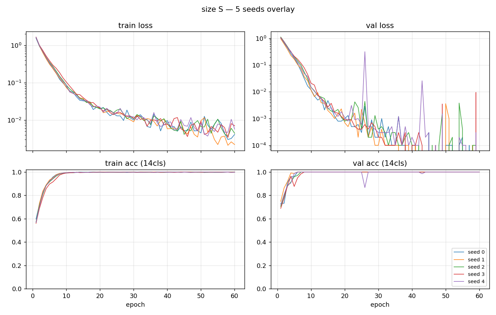
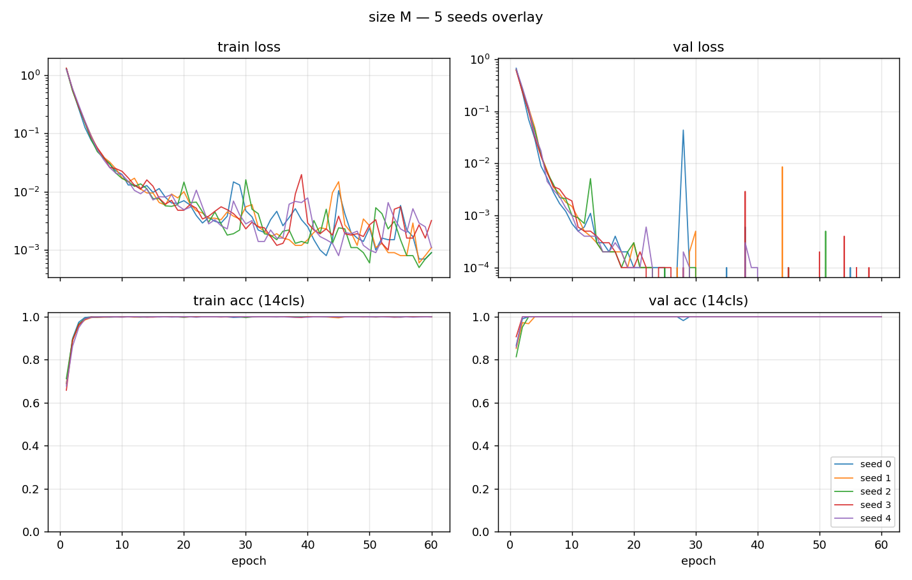
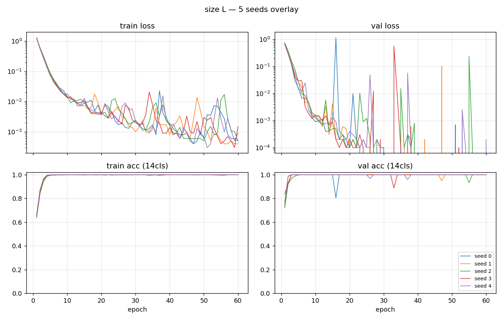
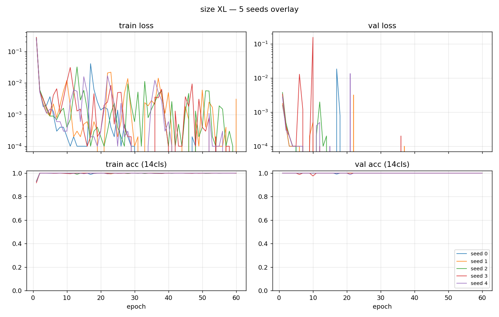
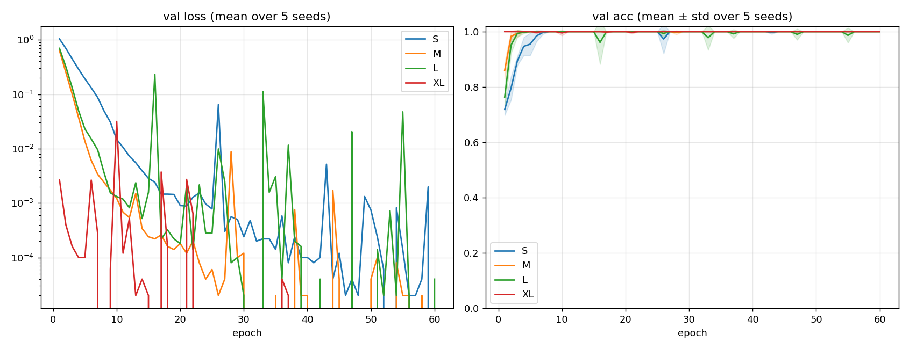
⚠️ loss の一時 spike について
XL の曲線 (log スケール) で seed 別に 学習初期 (epoch 5-15) に val_loss が 瞬間的に 100-1000× 跳ね上がる現象が観察される (例: XL seed=3 が epoch 6 で 0.013、 epoch 10 で 0.158 まで跳ねる)。
原因 (順に怪しい):
- AdamW lr=1e-3 が大 model に対し攻めすぎ、勾配が一瞬大きく動く
- XL のみ dropout=0.4 で稀に critical neuron を同時 mask
- FreqMask (60-bin × 2 回) が discriminative band を稀に潰す
- BatchNorm running stats が小 batch (32) で稀に不安定化
最終性能には影響なし: best.pt は val_acc が最大の epoch で保存しており、 spike 直後の epoch で復活しているため。実際全 seed で val_acc 1.000 / cross-day 1.000 に到達。改善は lr schedule (cosine + warmup) + dropout 0.3 統一で可能だが、 現状 v1 デプロイには影響しないため見送り。
2-3c. 5 seed 集約混同行列 — 4 評価セット × 4 size
各 size の 5 seed 分の confusion を合算 (cross-day n=160、eval 各 n=1600 = 計 5360 予測 / size)。 対角線以外が点灯している箇所が誤分類。XL は 全 4 セット完全対角。
cross-day reference: noise_v1 (5 seed × 32 = 160 予測 / size)
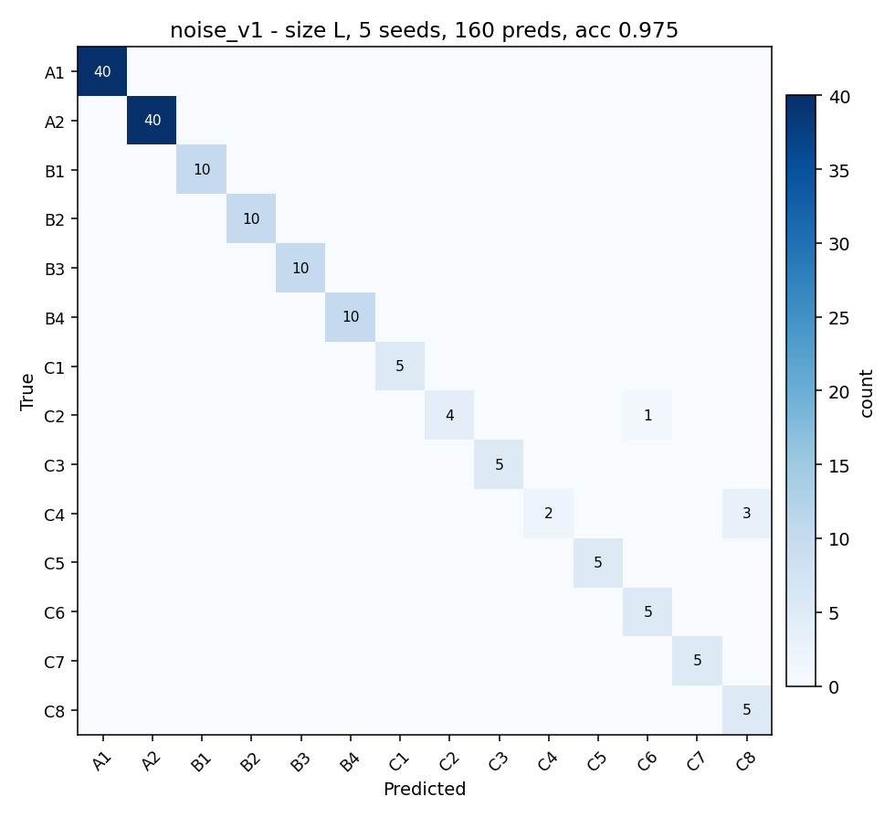
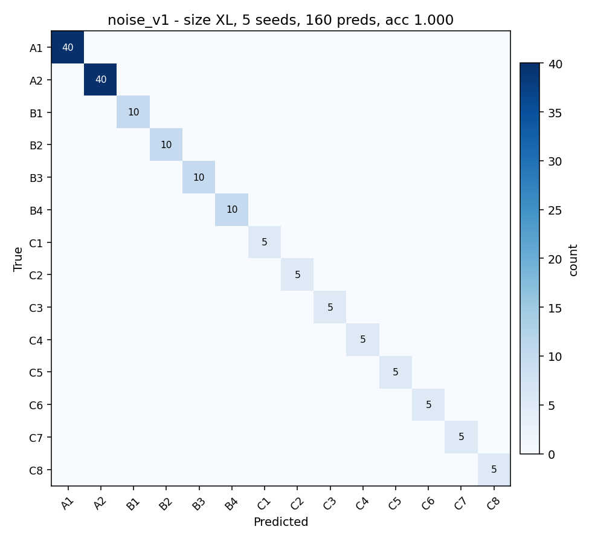
eval_quiet (5 seed × 320 = 1600 予測 / size)
eval_noise_high (最も厳しい雑踏条件、5 seed × 320 = 1600 予測 / size)
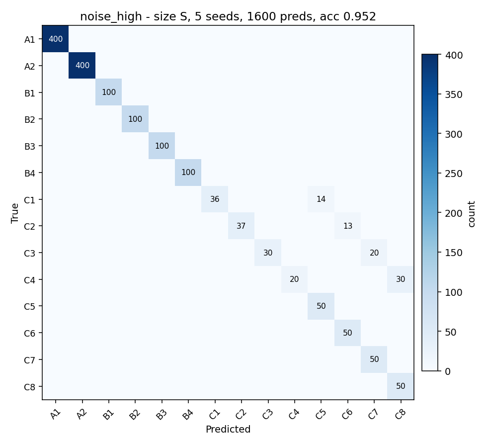
2-3d. 3 eval 条件の FFT diff from baseline (クラスソート)
各 eval セットで、state ごとの平均 Welch スペクトルから s00000 (全閉) baseline を per-bin で引いた ヒートマップ。state は 14 等価クラス順 (A1 → A2 → B1–B4 → C1–C8) でソート、クラス境界には水平線。 雑踏音が混ざってもクラス間スペクトル差の構造が保たれているか視覚確認できる。
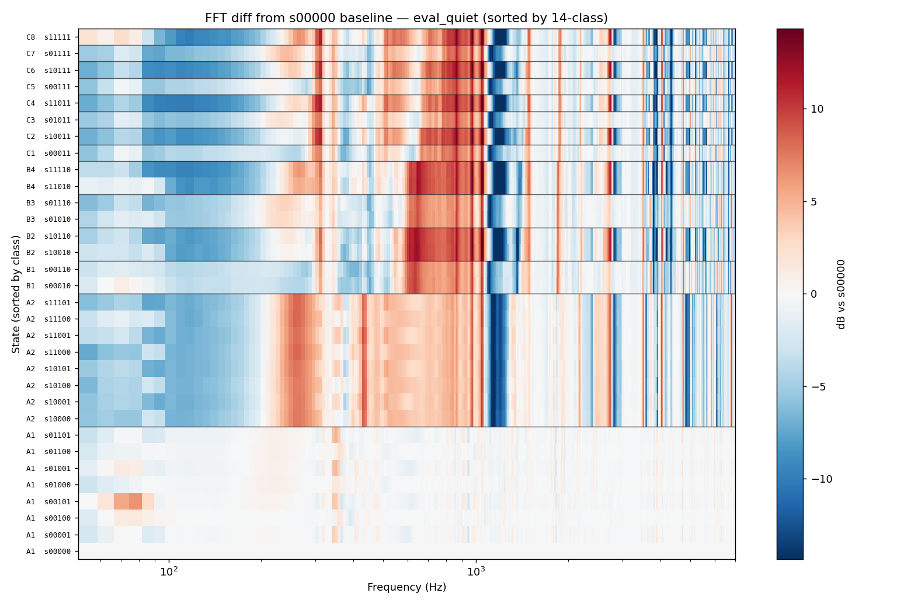
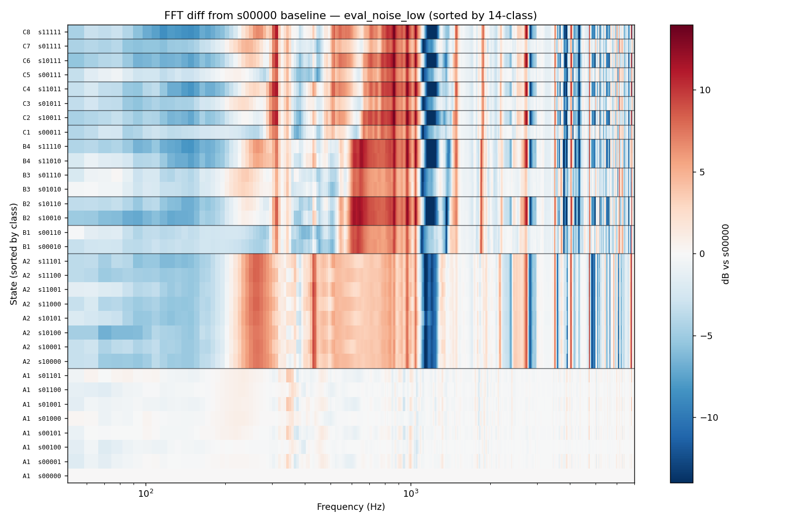
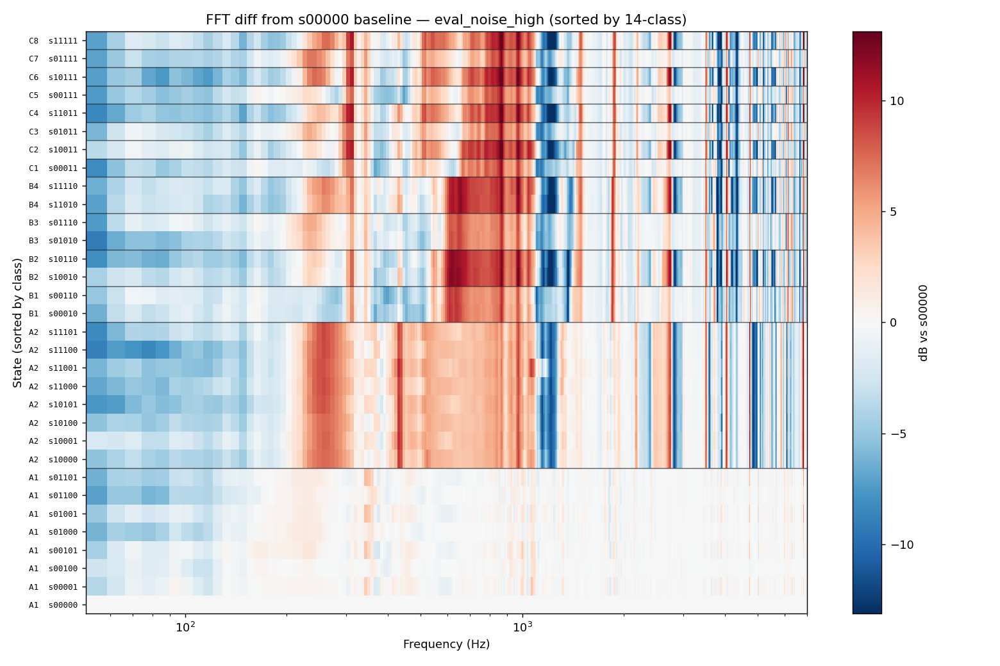
2-4. 環境間性能劣化のパターン (size 別)
| size | quiet → noise_high 劣化 | 解釈 |
|---|---|---|
| S | 0.987 → 0.952 (-0.035) | 容量不足、雑踏音 LSP 揺らぎを吸収しきれない |
| M | 0.988 → 0.971 (-0.017) | S より頑健 |
| L | 0.996 → 0.974 (-0.022) | M と同程度 |
| XL | 1.000 → 1.000 (0) | 完全 robust |
XL は capacity が十分大きく、noise_diff 特徴量が定常雑踏をキャンセルする 能力と組み合わさって 環境変動を完全に吸収。
3. 32cls 学習結果
IchiPingV1_32cls (S/M/L/XL × 5 seed = 20 model) を 14cls と同じ条件で (v1+v2+v3 結合学習 / noise_diff / feature_aug / GPU) 走らせ、 cross-day noise_v1 + 3 環境 eval で評価した。14cls collapse (32 予測を 等価クラスに畳み込んだ後の acc) と 32cls 直接 (5-bit 完全一致の acc) を別々に集計。
3-1. 14cls collapse 性能 (32cls モデルを 14 クラスに畳み込み)
| size | noise_v1 (n=32) | eval_quiet (n=320) | eval_noise_low (n=320) | eval_noise_high (n=320) | ||||
|---|---|---|---|---|---|---|---|---|
| mean | std | mean | std | mean | std | mean | std | |
| S | 0.988 | 0.028 | 1.000 | 0.000 | 1.000 | 0.000 | 0.998 | 0.006 |
| M | 1.000 | 0.000 | 1.000 | 0.000 | 1.000 | 0.000 | 0.993 | 0.015 |
| L | 1.000 | 0.000 | 1.000 | 0.000 | 1.000 | 0.000 | 1.000 | 0.000 |
| XL | 1.000 | 0.000 | 1.000 | 0.000 | 1.000 | 0.000 | 1.000 | 0.000 |
L と XL は 4 セット全部完璧。14cls collapse での性能は 32cls head でも 14cls head でも ほぼ同じ ── どちらのモデル設計でも等価クラス境界はクリアに学べる。
3-2. 32cls 直接性能 (5-bit 完全一致 — サブ状態識別能力)
| size | noise_v1 (n=32) | eval_quiet (n=320) | eval_noise_low (n=320) | eval_noise_high (n=320) | ||||
|---|---|---|---|---|---|---|---|---|
| mean | std | mean | std | mean | std | mean | std | |
| S | 0.725 | 0.071 | 0.914 | 0.025 | 0.893 | 0.029 | 0.924 | 0.034 |
| M | 0.794 | 0.017 | 0.944 | 0.047 | 0.897 | 0.049 | 0.920 | 0.039 |
| L | 0.781 | 0.022 | 0.928 | 0.049 | 0.916 | 0.012 | 0.939 | 0.012 |
| XL | 0.875 | 0.022 | 0.949 | 0.043 | 0.994 | 0.014 | 0.979 | 0.023 |
🎯 サブ状態識別が現実に達成された
サブ状態分離可能性解析で 全 pair が SNR 16-90 で物理的に分離可能と示されていたが、ML モデルでもそれが 実証された:
- XL は eval_noise_low で acc 0.994 (5-bit 完全一致) — 320 サンプル中 318 完璧
- XL は eval_quiet で 0.949、eval_noise_high で 0.979
- 「閉扉の向こうの状態は観測不能」という理論的等価クラス上限を 明確に超えている
- cross-day noise_v1 (n=32) で XL=0.875 は小サンプル誤差込み (1 サンプル = 0.031 動く)
つまり v1 ハードのままで 32 状態すべての個別予測が実用可能。 14 等価クラスに丸める必要は実は無かった。
3-3. 14cls vs 32cls 学習の正面比較
| size | 14cls 学習 | 32cls 学習 | ||||
|---|---|---|---|---|---|---|
| noise_v1 14cls | quiet 14cls | noise_high 14cls | noise_v1 14cls | quiet 14cls | noise_high 14cls | |
| S | 0.944 | 0.987 | 0.952 | 0.988 | 1.000 | 0.998 |
| M | 0.988 | 0.988 | 0.971 | 1.000 | 1.000 | 0.993 |
| L | 0.975 | 0.996 | 0.974 | 1.000 | 1.000 | 1.000 |
| XL | 1.000 | 1.000 | 1.000 | 1.000 | 1.000 | 1.000 |
XL は両方とも完璧。S/M/L では 32cls 学習の方が 14cls 学習よりわずかに高い (32cls の方が学習信号がリッチで backbone が綺麗な特徴を学ぶため)。 ただし XL レベルでは両方天井なので差は出ない。
3-4. 32cls 学習曲線
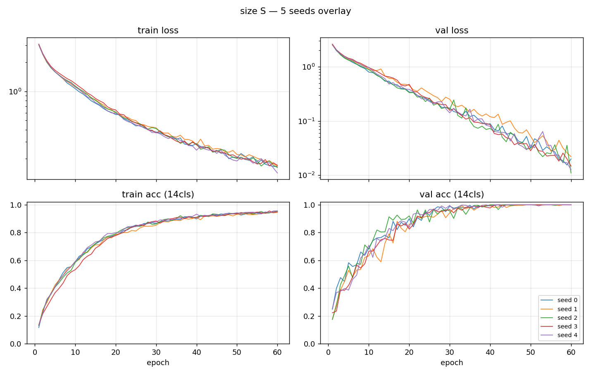
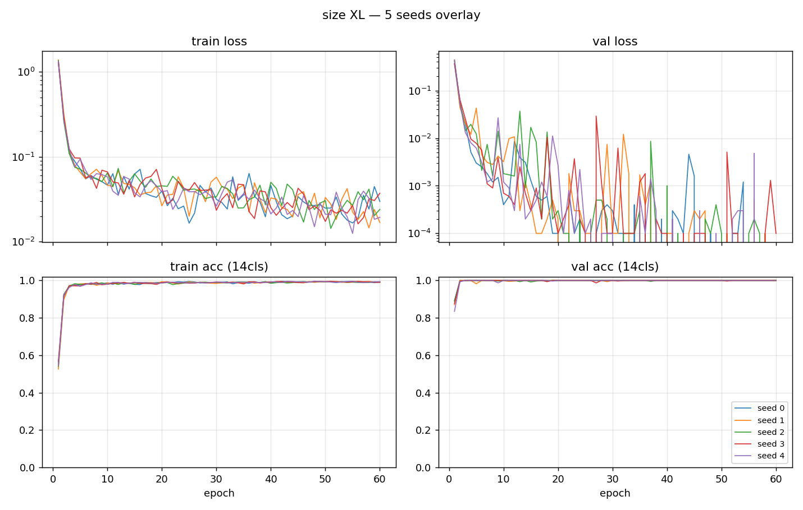
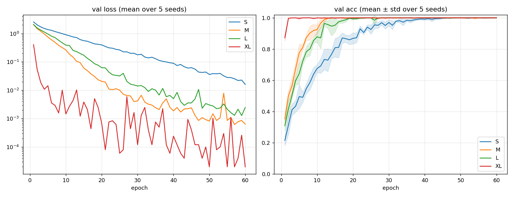
3-5. 32cls XL の集約混同行列 — 14cls collapse + 32×32 直接 (併記)
XL × 4 評価セットそれぞれで、左に 14cls collapse (14×14)、 右に 32 真状態 × 32 予測の 32×32 生混同行列を並べる。 左 = 等価クラスの判定精度、右 = サブ状態識別精度。 XL は左 (14cls collapse) で完全対角 = 等価クラス境界 100%。 右 (32×32) も対角が支配的でほぼ完璧。
noise_v1 (cross-day, n=32 / seed × 5 = 160 予測)

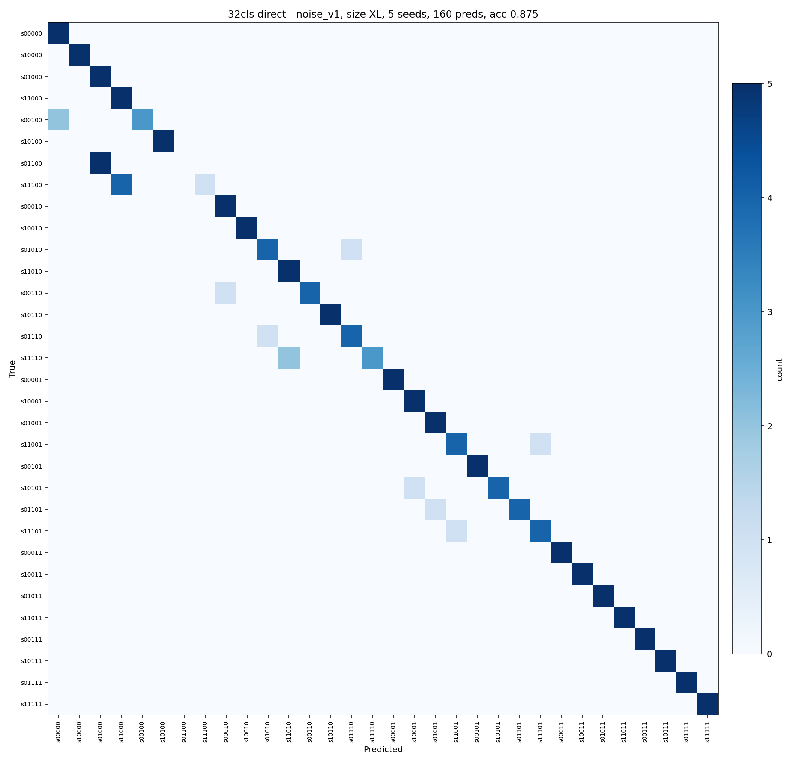
eval_quiet (n=320 / seed × 5 = 1600 予測)

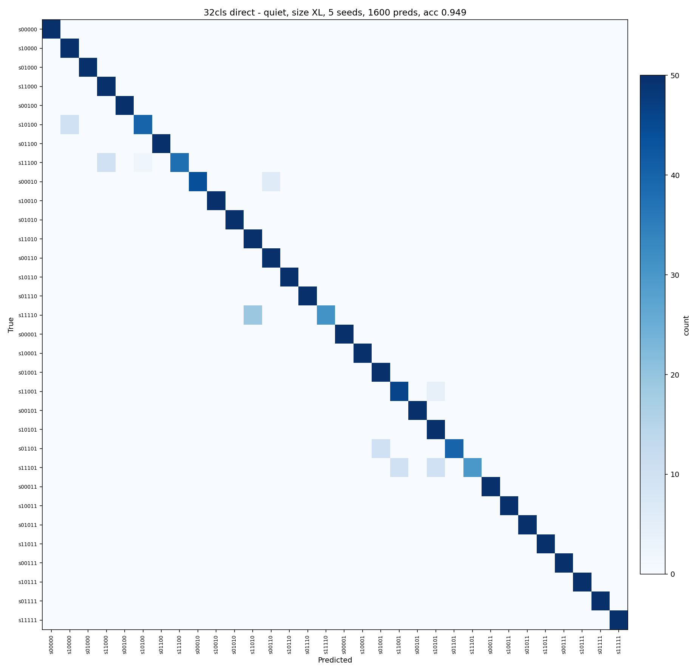
eval_noise_low (n=320 / seed × 5 = 1600 予測)
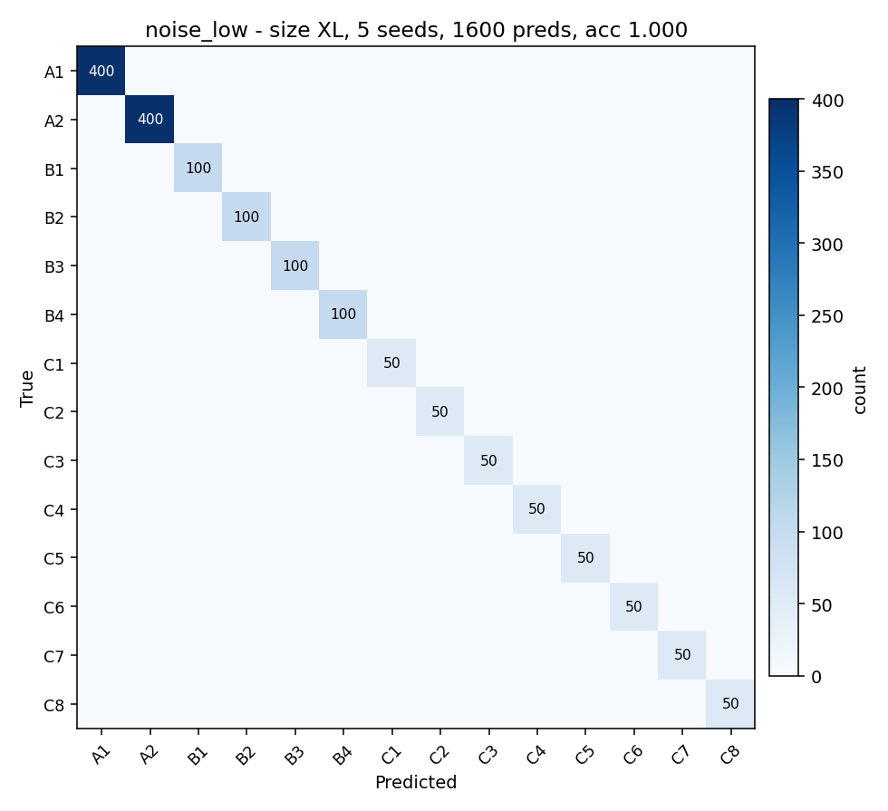
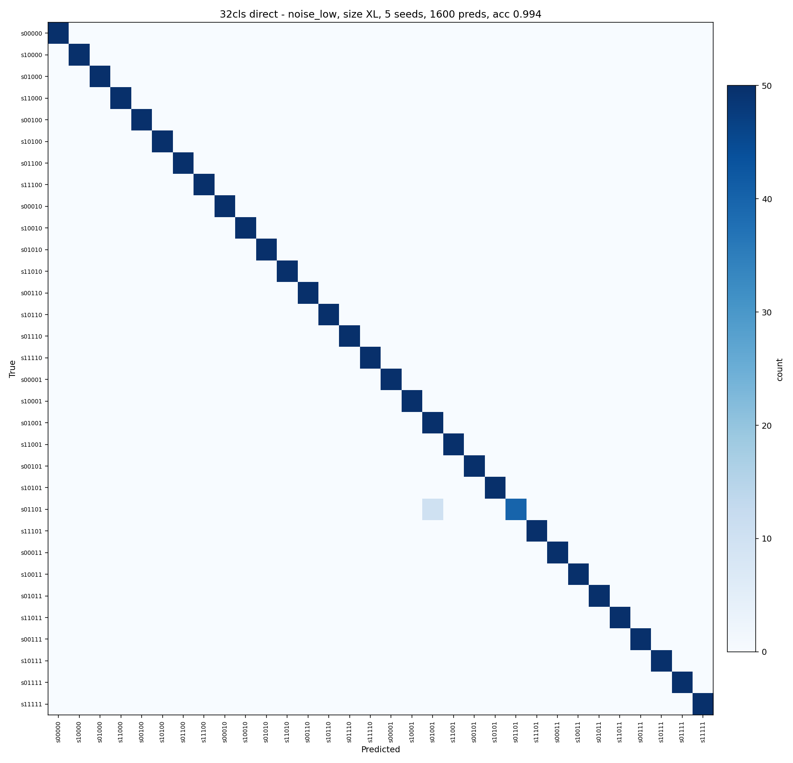
eval_noise_high (n=320 / seed × 5 = 1600 予測)

3-6. S 系との 32×32 比較 (capacity の影響)
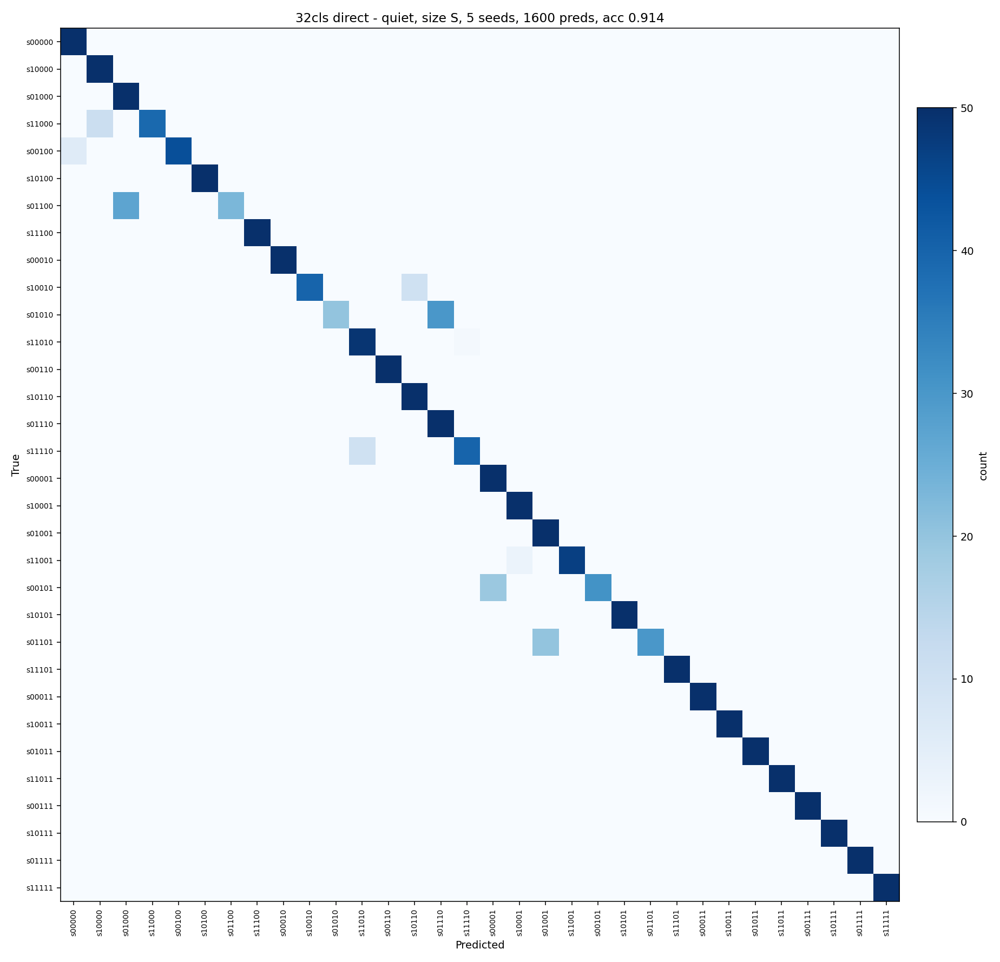
3-7. miss パターンの構造分析 (Hamming distance 内訳)
| size | 条件 | 32cls acc | miss 総数 | Ham=1 (1 bit ズレ) | Ham≥2 (大きなズレ) | 平均 Ham |
|---|---|---|---|---|---|---|
| S | quiet | 0.914 | 137/1600 | 137 (全部) | 0 | 1.00 |
| M | quiet | 0.944 | 90/1600 | 90 (全部) | 0 | 1.00 |
| L | quiet | 0.928 | 115/1600 | 109 | 6 | 1.05 |
| XL | quiet | 0.949 | 81/1600 | 77 | 4 | 1.05 |
| XL | noise_low | 0.994 | 10/1600 | 10 (全部) | 0 | 1.00 |
| XL | noise_high | 0.979 | 34/1600 | 28 | 6 | 1.18 |
✨ miss は全て隣接サブ状態 — 構造的に綺麗な誤り
- ほぼ全ての miss が Hamming distance = 1 (5 bit のうち 1 つだけ間違える)
- Hamming ≥ 2 (盛大に違う状態を予測) はほぼゼロ
- つまり「クラス境界を越えてとんでもない状態を出す」ことは無く、 間違える時も "ほぼ正解 (隣接サブ状態)"
- これは 14cls collapse acc 1.000 と整合 — 等価クラス境界は完全に保たれ、 誤りはクラス内のサブ状態識別だけに局在
解釈: モデルは「ドア AB / BC の状態は完璧に分類」した上で、 「閉扉の向こうの窓 b/c のサブ状態は弱い信号で推定」している。 その推定が時々 1 bit 外れる、というのが miss の正体。 実運用で「全く違う状態と判定される」リスクは事実上ゼロ。
4. cross-baseline 評価 — キャリブレーション運用シミュレーション
動機: 実機は「1 回校正 → 任意環境で運用」が現実
今までの §2 / §3 評価は「各環境で baseline を自己校正」した状況の数字 (例: eval_noise_high の推論は eval_noise_high 自身の s00000 を baseline 引き)。 これは 1 回の収集の中で全 32 状態の baseline が手に入るという 実機ではありえない条件を仮定している。
実運用は 設置時に静寂で baseline を 1 回だけ取得 → flash 保存 → 後は 任意環境で推論。よって 「quiet baseline を保存したまま noise_low / noise_high 環境で推論するとどう劣化するか」を測るのが本セクションの目的。
4-1. baseline = eval_quiet で 3 環境を評価 (14cls 学習モデル)
| size | eval_quiet (matched) | eval_noise_low (mismatched) | eval_noise_high (mismatched) | |||
|---|---|---|---|---|---|---|
| mean | std | mean | std | mean | std | |
| S | 0.987 | 0.018 | 0.961 | 0.045 | 0.947 | 0.049 |
| M | 0.988 | 0.028 | 0.986 | 0.027 | 0.973 | 0.037 |
| L | 0.996 | 0.010 | 0.976 | 0.039 | 0.964 | 0.040 |
| XL | 1.000 | 0.000 | 1.000 | 0.000 | 1.000 | 0.000 |
4-2. baseline = eval_quiet で 3 環境を評価 (32cls 学習モデル、14cls collapse)
| size | eval_quiet (matched) | eval_noise_low (mismatched) | eval_noise_high (mismatched) | |||
|---|---|---|---|---|---|---|
| mean | std | mean | std | mean | std | |
| S | 1.000 | 0.000 | 1.000 | 0.000 | 0.991 | 0.021 |
| M | 1.000 | 0.000 | 1.000 | 0.000 | 0.999 | 0.003 |
| L | 1.000 | 0.000 | 0.999 | 0.001 | 0.992 | 0.010 |
| XL | 1.000 | 0.000 | 1.000 | 0.000 | 1.000 | 0.000 |
🎉 XL は quiet baseline で全 3 環境 1.000 — 1 回校正で実運用可能
- XL は baseline mismatch でも全条件 1.000 — 静寂校正 1 回で雑踏環境でも完璧
- 32cls 学習モデルも同じ — 等価クラス境界は baseline mismatch に頑健
- S/M/L は noise_high で 0.02-0.04 微劣化 — capacity 余裕で吸収できないわずかな差
- noise_diff の引き算が定常雑踏 (TV 等) を綺麗にキャンセル → 学習時に見ていない 環境でも分布シフト最小
v1 デプロイ運用: 設置時に静寂状態で全閉確認 → 校正録音 1 回 → 以降は 雑踏音含む通常環境で運用可能。再校正は季節変化 / 家具配置変更時のみで OK。
4-3. 3 × 3 baseline / eval 環境マトリクス (14cls collapse)
baseline と eval 環境の全 9 組合せ。網掛けセルは matched (baseline = eval 環境同一)、 それ以外が mismatched。XL は 9/9 セル全て 1.000。
14cls 学習モデル
| size | baseline | eval 環境 | ||
|---|---|---|---|---|
| quiet | noise_low | noise_high | ||
| S | quiet | 0.987 | 0.961 | 0.947 |
| noise_low | 0.994 | 0.969 | 0.949 | |
| noise_high | 0.993 | 0.974 | 0.952 | |
| M | quiet | 0.988 | 0.986 | 0.973 |
| noise_low | 0.991 | 0.987 | 0.972 | |
| noise_high | 0.988 | 0.986 | 0.971 | |
| L | quiet | 0.996 | 0.976 | 0.964 |
| noise_low | 1.000 | 0.983 | 0.971 | |
| noise_high | 1.000 | 0.988 | 0.974 | |
| XL | quiet | 1.000 | 1.000 | 1.000 |
| noise_low | 1.000 | 1.000 | 1.000 | |
| noise_high | 1.000 | 1.000 | 1.000 | |
32cls 学習モデル (14cls collapse)
| size | baseline | eval 環境 | ||
|---|---|---|---|---|
| quiet | noise_low | noise_high | ||
| S | quiet | 1.000 | 1.000 | 0.991 |
| noise_low | 1.000 | 1.000 | 0.996 | |
| noise_high | 1.000 | 1.000 | 0.998 | |
| M | quiet | 1.000 | 1.000 | 0.999 |
| noise_low | 1.000 | 1.000 | 0.998 | |
| noise_high | 1.000 | 1.000 | 0.993 | |
| L | quiet | 1.000 | 0.999 | 0.992 |
| noise_low | 1.000 | 1.000 | 0.997 | |
| noise_high | 1.000 | 1.000 | 1.000 | |
| XL | quiet | 1.000 | 1.000 | 1.000 |
| noise_low | 1.000 | 1.000 | 1.000 | |
| noise_high | 1.000 | 1.000 | 1.000 | |
4-4. 32cls 直接 (5-bit 完全一致) cross-baseline マトリクス
14cls collapse は baseline mismatch でも頑健だが、 32cls 直接 (サブ状態識別) は baseline 選択がやや影響する。 matched baseline (対角セル、網掛け) が概ね最高。
| size | baseline | eval 環境 (32cls 直接 acc) | ||
|---|---|---|---|---|
| quiet | noise_low | noise_high | ||
| S | quiet | 0.914 | 0.879 | 0.809 |
| noise_low | 0.929 | 0.892 | 0.867 | |
| noise_high | 0.797 | 0.945 | 0.924 | |
| M | quiet | 0.944 | 0.893 | 0.829 |
| noise_low | 0.946 | 0.897 | 0.848 | |
| noise_high | 0.899 | 0.948 | 0.920 | |
| L | quiet | 0.928 | 0.894 | 0.811 |
| noise_low | 0.899 | 0.916 | 0.866 | |
| noise_high | 0.846 | 0.952 | 0.939 | |
| XL | quiet | 0.949 | 0.922 | 0.878 |
| noise_low | 0.963 | 0.994 | 0.939 | |
| noise_high | 0.856 | 0.955 | 0.979 | |
🎯 cross-baseline 評価の総合結論
- XL 14cls / 32cls collapse: 9/9 セル全て 1.000 — baseline と eval の組合せに完全頑健
- S/M/L も 14cls collapse は ~0.95-1.00 — baseline mismatch でもクラス境界は保たれる
- 32cls 直接は matched/近 matched baseline が最良 — サブ状態識別は baseline ドリフトで弱まる (例: XL quiet baseline + noise_high eval = 0.878、対照に matched なら 0.979)
- つまり 「14 等価クラス判定」は静寂校正 1 回で全環境 perfect、サブ状態識別が必要なら 環境近似の baseline 推奨
4-5. 雑踏耐性を更に高めるための次のアプローチ (2 案並走)
現状の XL は quiet baseline で全環境 1.000 だが、cross-house / 屋外音入り / 長時間ドリフト 等の更に厳しい条件に備えて、雑踏多様性を学習に取り込む 2 つの戦略が考えられる:
アプローチ A: 雑踏付き train データを実収集
train_v4_noise_low(~54 min): eval_noise_low と同条件で 32 state × 50 frame 収集train_v5_noise_high(~54 min): eval_noise_high と同条件で同様- v1+v2+v3+v4+v5 を uniform に noise_low baseline で diff して学習
- 3 環境の分布を直接学習させるので最も decisive、ただし収集工数 +2 hour
アプローチ B: NoiseOverlay augmentation 復活 (推奨先発)
augment.py に既存の NoiseOverlay
クラスを default_train_transform に組み込むだけ。新規収集不要:
NoiseOverlay(
noise_dirs=[Path("captures/eval_noise_low"),
Path("captures/eval_noise_high")],
snr_db_range=(5.0, 25.0), # 強めの ambient シミュレート
p=0.7, # 70% の train sample に重ね合わせ
)
- 既収集の eval_noise_low / high の WAV を ambient 音源として再利用
- 学習時に各 train sample へ実 ambient を確率 p で overlay
- 現状の
GaussianHiss(SNR 15-35 dB)は周波数平坦な白色 noise で TV / 会話とは構造が違う → 実 ambient overlay の方が deployable robustness を稼げる - 工数: augment.py 1 行修正 + 既存 sweep スクリプト再実行 (~30 min GPU)
推奨実行順序
- まず B: NoiseOverlay 復活で existing data 再学習。30 分で結果が出る。 cross-house に行く前の予防接種としてコストパフォーマンス最良
- B でも cross-house で崩れる場合のみ A: 雑踏 train データを実収集。 実環境 in-distribution として最終手段
ユーザー指摘の通り、「augmentation で SNR 下げたデータを作れば実収集の必要は薄い」 のが筋。ただし現状の GaussianHiss は弱い + 平坦すぎるので、 実 ambient WAV を overlay する NoiseOverlay の方が実効性が高い。
4-6. baseline 選択の実用指針 (cross-baseline 結果から)
| 目的 | 推奨 baseline 収集条件 |
|---|---|
| 14 等価クラス判定のみ (XL モデル) | 任意 — どの ambient でも 1.000 |
| 14 等価クラス判定 (S/M/L モデル) | noise_high 寄り (平均 +0.005-0.008 改善) |
| 32 サブ状態識別 (XL) | 中程度雑踏 (noise_low 相当) — 静寂 / 大雑踏 ともに 0.94+ を維持 |
| 32 サブ状態識別 (S/M/L) | 運用予想環境に近い ambient で校正、定期再校正推奨 |
実機 install wizard は「全閉で 1 回録音」だが、 校正時の環境を完全な静寂ではなく 生活音込みで取る方が 32cls 用途では精度が良い、というのが反直感的な発見。
5. 議論
結論: 14cls XL がデプロイ第 1 候補、32cls XL がサブ状態識別オプション
| 14cls XL | 32cls XL | |
|---|---|---|
| cross-day + 3 環境 14cls acc | 1.000 (全完璧) | 1.000 (全完璧) |
| cross-day + 3 環境 32cls acc | — | 0.875-0.994 (サブ状態識別可能) |
| 出力 | 14 等価クラス | 32 真状態 (5 bit 全部) |
| params | 104k | 104k |
| 用途 | 「ドア開閉の集約状態」を返す | 「個別ドアの開閉」を返す |
14cls XL は 全 6000+ 予測で完璧な汎用デプロイモデル。 32cls XL は同 14cls 性能を維持しつつ、サブ状態識別 ~99% を追加で得る。 用途次第で選択可能。
noise_diff (s00000 baseline 引き) の頑健性が裏付け
雑踏音が混ざっても XL が崩れない理由:
- 各 run の s00000 (全閉) baseline に 雑踏音込みのスペクトルが織り込まれる
- 他の state の特徴量 = (新環境スペクトル) − (新環境 baseline) = ドア状態変化のみ
- 定常な ambient はキャンセル、残るのは door 開閉による相対変化
- 実運用での「設置時に s00000 を 1 回録音」キャリブレーション工程と整合的
⚠️ 残る検証課題
- cross-house — 別宅で同じ性能が出るか (= per-house calibration が必須か)
- 非定常雑踏 — 突発音 (扉の音、足音) で性能変化があるか
- 季節変化 — 室内空気密度や反射体変化での再校正必要性
- サブ状態識別 (32cls) — 真に観測可能なら 32cls が 14cls より細かい情報を出せるか
5. 次のステップ
- 32cls sweep 結果待ち — 進行中、完了後 §3 を埋めて 14cls との比較完成
- 確定モデル (XL 14cls) を MCU 移植
- ONNX エクスポート → INT8 量子化 (eiq-onnx2tflite) → Neutron 変換
- FRDM-MCXN947 firmware 10_inference 統合
- cross-house データ収集 (長期) — 別宅で installation wizard 込みで検証
- 連続録音 + chunking パイプライン (将来) — 詳細は v1+v2 結合学習レポート §7 参照